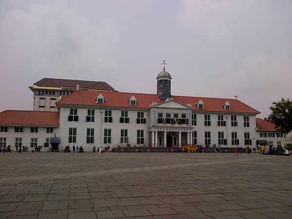

Indonesia Island
one of the Indonesian islands that will be beautiful but the times, time is too fast until there might be a lot of garbage hanging around.
Learn More

Kota Tua Jakarta
Kota Tua Jakarta, also known as Old Batavia (Oud Batavia), is a small neighborhood in Jakarta, Indonesia. in Jakarta, Indonesia. This particular area has an area of 1.3 square kilometers across North Jakarta and West Jakarta (Pinangsia, Taman Sari and Roa Malaka).
Learn More